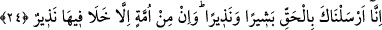

Müslümanlara gönlünü bağla ki sen peygamber olarak tebliğe başlamadan önce seni
aramak yolunda dünyanın etrafında dolaşıyor ve senden bir iz arıyordu.”
Lisân-ı hâl şöyle der:
Anber kokulu siyah zülfünü tutacağım;
Yasemen yaprağının üzerine miskle resim yapacağım.
Senin yeninin ucunu bir kez tutacak olsam,
Hind kılıcıyla benim elimi koparmasın.
24. Biz seni müjdeleyici ve uyarıcı olarak hak ile gönderdik. Her millet için
mutlaka bir uyarıcı (peygamber) bulunmuştur.
“Biz seni” müminleri cennetle “müjdeleyici ve” kâfirleri cehennemle korkutucu ve
“uyarıcı olarak hak,” yâni İslâm dîni yahut Kur’an “ile gönderdik.” Geçmiş
ümmetlerden ve geçmiş asırlarda yaşayan halktan “her millet için mutlaka bir uyarıcı
(peygamber)” yahut âlim “bulunmuştur.”
Peygamberin gönderilmesinden en önemli maksat uyarı olduğu için burada yalnız
“uyarıcı” vasfı ile yetinilmiştir.
Kevâşî’de der ki; İsa (a.s.)’dan sonraki fetret döneminde sürekli Îsâ dini üzere
bulunup îmâna dâvet edenler hep mevcûd idi. Keşfü’l-esrâr’da der ki: Bu âyet her
dönem haberî huccetin varlığına delalet etmektedir. İlk insan olan Âdem (a.s.) kendi
evlâdlarına peygamber olarak gönderilmiştir. Daha sonra peygamberin bulunmadığı
fetret devirlerinde Allah’tan tebliğ eden sâdık bir uyarıcı yahut bu tebliğ vazifesini
edada onun makamına kâim olan bir âmir hep var olagelmiştir. Allah Teâlâ şöyle
buyuruyor: “İnsan, kendisinin (emir ve yasakla mükellef olmaksızın) başıboş
bırakılacağını mı sanır!” (el-Kıyâme 75/36).
Şayet bu âyetle (el-Kıyâme 75/36) Allah Teâlâ’nın “Ataları uyarılmamış, bu yüzden
kendileri de gaflet içinde kalmış bir toplumu uyarman için indirilmiştir.” (Yâsîn
36/6) kavli arasındaki çelişki nasıl cem ve te’vil edilir? denilirse, ben derim ki: Yâsin
sûresindeki âyetin mânâsı; “Ey Muhammed! Senin ümmetin dışında gelmiş geçmiş bütün
ümmetlere inkârlarına karşı onları uyaracak, îman etmelerine karşı da onları
müjdeleyecek bir elçi mutlaka gönderdim, demektir.”
Allah Teâlâ’nın “Halbuki biz onlara okuyacakları kitaplar vermediğimiz gibi
senden önce onlara bir uyarıcı (peygamber) de göndermemiştik.” (es-Sebe’ 34/44)
kavli ve yine “Ataları uyarılmamış, bu yüzden kendileri de gaflet içinde kalmış bir
toplumu uyarman için indirilmiştir” (Yâsîn 36/6) âyeti buna delâlet eder. Denilir ki
bundan murad köklerinin kesilip nesillerinin tamamen yok edilme azâbı ile helâk olan